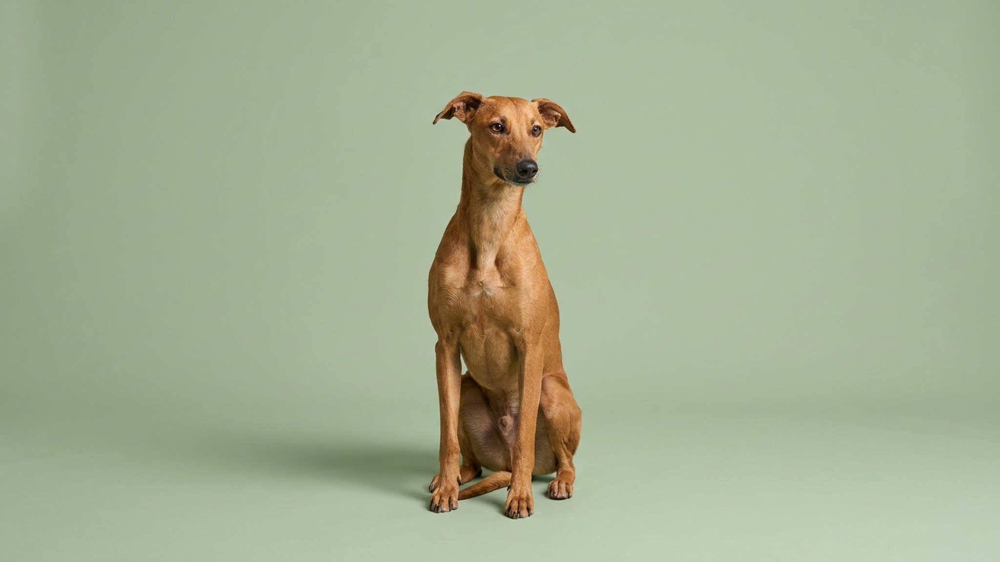

Собака упирается у лестницы — и хозяин тянет поводок сильнее. Это не помогает: страх закрепляется, а следующий подъезд превращается в сцену. За отказом идти по ступенькам стоят конкретные причины — и каждую решают по-разному. Вот что делать.
🐾 Застряли на этом этапе воспитания?
Опишите ситуацию в AnimaLife — получите разбор причины и пошаговый план на неделю под возраст вашего питомца. Бесплатно.
Получить план → Получить в MAX →
У вас iPhone? AnimaLife есть в App Store
Причины разные, и важно понять свою — потому что подход к каждой отличается.
Подталкивать, тянуть поводком, класть лакомство слишком далеко вперёд — всё это создаёт давление и усиливает тревогу. Собака воспринимает принуждение как подтверждение: «лестница опасна, раз хозяин так нервничает». Ключевой принцип — никакого форсирования. Если после нескольких попыток собака только сильнее упирается, сделайте перерыв на день: тревога должна снизиться до нуля перед следующей сессией.
Работайте в короткие сессии по 3–5 минут, без поводка там, где безопасно, и всегда с лакомством. Лакомство должно быть достаточно ценным — то, что собака получает только в этом контексте. Банальное печенье, которое она ест каждый день, мотивирует слабо.
Уличные ступени и лестничная клетка в подъезде — разные задачи. На улице собака обычно справляется быстрее: пространство открытое, можно выбрать темп. В подъезде давит акустика, запахи чужих, ограниченное пространство. Если собака уверенно ходит по уличной лестнице, но тормозит в подъезде — начните план заново именно там, с шага 1. Не считайте первый успех переносимым автоматически.
Если собака раньше легко ходила по лестницам, а теперь отказывается или осторожничает — это повод обратиться к ветеринару. Дискомфорт в суставах или позвоночнике часто проявляется именно так: собака не может объяснить, что болит, но избегает движений, которые причиняют боль. Особенно внимательно стоит отнестись к крупным породам старше 5–6 лет и таксам, у которых высок риск проблем с позвоночником. Не списывайте на «характер» или «упрямство».
Материал носит информационный характер и не заменяет очную консультацию ветеринара.
🐾 Разберите свой случай в AnimaLife
AI подскажет, что закрепляет нежелательное поведение и как переучить без наказаний. Ответ за минуту, круглосуточно и бесплатно.
Разобрать случай → Разобрать в MAX →
У вас iPhone? AnimaLife есть в App Store
🐾 Понравился разбор?
Подпишитесь на канал — каждый день разбираем по одному тревожному симптому у кошек и собак: что в пределах нормы, а когда пора к врачу. Подпишитесь, чтобы не пропустить разбор, который может спасти здоровье вашего питомца.